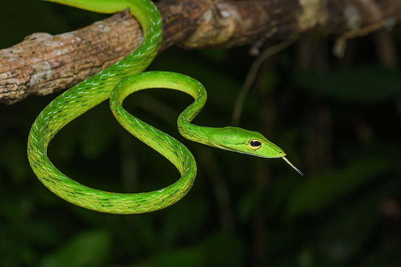
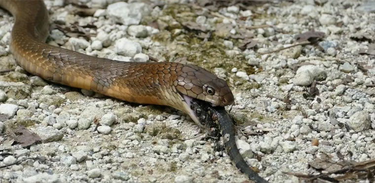

Ophidiophobics beware! This page is all about the slithery reptiles found in Singapore. Time to make your move to another page if you do not want to continue.
Want to learn some things about snakes? Take a look at the video above and continue reading the page to find out more.
Snake? Vine? Snake-Vine?
A casual stroll along the boardwalks of Sungei Buloh will present you with the opportunity to connect with nature. Smell of the sea, scenery of green leaves and vines... But some "vines" are not vines!
Look carefully, and you might notice that some tendrils of green hanging down from branches are actually Oriental Whip Snakes (Ahaetulla prasina). They exhibit crypsis in which they try to act inconspicuous and hard to identify, which helps them ambush their prey and hide from predators.
Snake-eat-snake world!?
The snake that eats snake. This characteristic is apparent to one who knows the scientific name of the King Cobra (Ophiophagus hannah).
Ophiophagus meaning "snake-eater" in Latin, is a clear identifier of cannibalistic behaviour in King Cobras, and this species of snakes can be found in the rainforests and mangrove forests in Singapore. I hope that one day, I can have the chance to observe this regal king of serpents in the wild of Singapore!